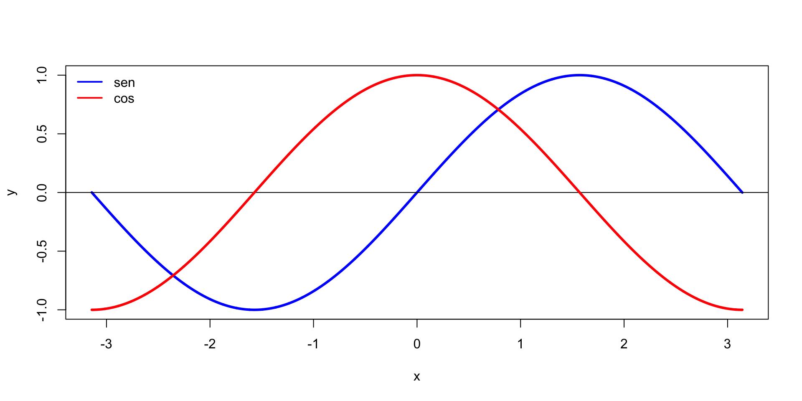
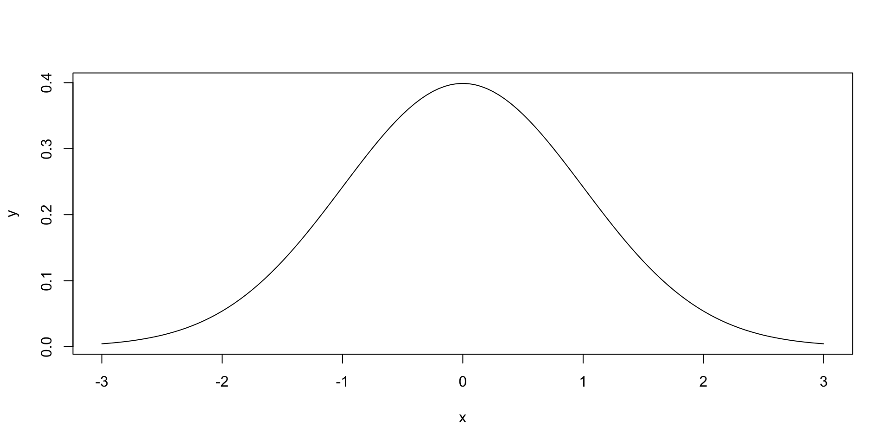
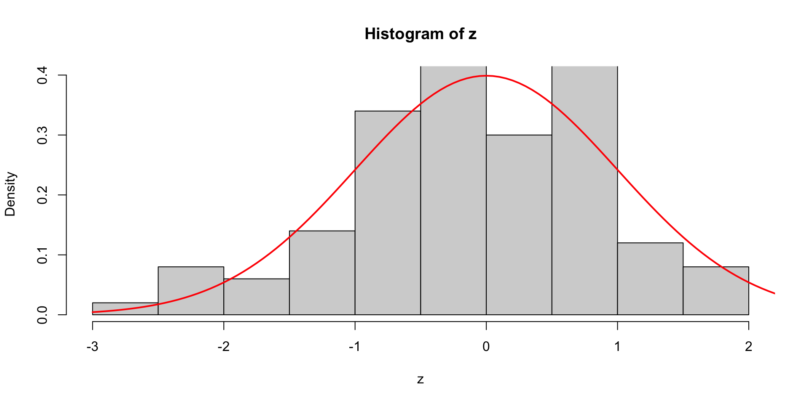

![]()
[1] "numeric"R Como una calculadora
Tipos de datos
Tipos de datos en R
Numéricos:
Numeric: Números reales, pueden tener decimales (ej: 3.14, -2.5).
Integer: Números enteros (ej: 5, -10).
La diferencia está en la memoria usada
Complex: Números complejos (ej: 3+2i).
Caracteres:
Character: Texto, siempre encerrado entre comillas (ej: “Trat 1”, “Análisis de datos”).
Lógicos:
Logical: Valores booleanos, TRUE o FALSE.
Funciones is.
Se usan para indagar el tipo de dato que es un objeto
Importante
Observe que estas funciones regresan un valor lógico (logical)
Tipos de datos básicos en R II
Factores:
Factor: Categorías o niveles de una variable, utilizados para variables cualitativas (ej: “Hombre”, “Mujer”).
Estructuras de Datos
Vectores:
Secuencia de elementos del mismo tipo (numéricos, caracteres, lógicos).
Matrices:
Arreglos bidimensionales de elementos del mismo tipo.
Data frames:
Estructura de datos similar a una hoja de cálculo, con columnas de (posiblemete) diferentes tipos.
Estructuras de Datos (II)
Listas:
Objetos que pueden contener diferentes tipos de elementos, incluyendo otros objetos.
Conocer el tipo de dato
Funciones is
Estas funciones regresan TRUE si el objeto es del tipo indicado después del punto y FALSE en otro caso.
Aplicación
Código que toma un objeto x, si es numérico eleva al cuadrado, en caso contrario manda un mensaje de error.
Usando R como una calculadora
R como una calculadora
Qué aprenderemos:
- Poder usar R como calculadora científica
- Poder asignar una variable y ver su valor
Operaciones
Potencia
Cociente
Residuo de la división
parte entera de la división
Ejemplo de aplicación
El siguiente código genera un vector x numérico de longitud \(n\), escribir el código R que indique si el número \(n\) es par o es impar.
Ayuda: La longitud de un vector x se obtiene con length(x)
La longitud de x es: 34
Varias operaciones juntas
Orden de las operaciones
Tres formas de asignar valores a un objeto
- La primera forma es usando
<-
- La segunda forma es usando
=
- La tercera forma es usando
->
Ejemplo: Valor presente
Suponga que queremos hacer un programa para estimar el valor presente de \(\$ 100\) recibidos en dos años con una tasa de descuento anual del \(8\%\). La fórmula relacionada se muestra a continuación \[Pv=\frac{Fv}{(1+R)^n}\]
Ejemplo: Valor presente (cont)
Vectores
Para asignar un conjunto de valores a un vector, usamos c(n1,n2,...,nk), c es una abreviatura de concatenar concatenate.
Para asignar un conjunto de enteros consecutivos secuencia regular, podríamos usar n1:n2, como 1:10
Vectores (cont.)
R distingue entre mayúsculas y minúsculas, lo que significa que la X mayúscula y la x minúscula son variables diferentes.
Funciones ls() and rm()
A veces necesitamos verificar todas las variables existentes (objetos) en la memoria. para eso usamos la función ls().
Cuando ya no se necesita una variable, podemos eliminarla de la memoria con la función rm()
Borrar más de una
[1] "a" "b1" "b2" "c1" "ch" "Fv" "l" "n" "Pv" "R" "x" "y" Para eliminar todas las variables (objetos), tenemos el siguiente código
Imprimir el contenido de un objeto.
Para imprimir una variable de carácter (es decir, una cadena) en la pantalla, podríamos usar las funciones cat() o print(). Recuerde encerrar las cadenas entre comillas simples o dobles.
Imprimir el contenido de un objeto.
Hola R!!!!
[1] "Hola R!!!!"Secuencias
La función seq()
La función seq() se utiliza para generar un conjunto de valores con cierto patrón.
[1] 1 3 5 7 9 11 13 15 17 19[1] 1.000000 4.141593 7.283185 10.424778El comando completo tiene el siguiente formato.
La función rep()
La función rep() se usa para repetir el mismo valor \(n\) veces, como se muestra a continuación.
La función length()
Para encontrar el número de valores (observaciones) que tiene un vector, aplicamos la función length(), como se muestra a continuación.
Enfoque de posición
Hay dos formas de entregar datos a una función: por posición y por palabra clave. Para la función seq(), su formato es seq(from,to,by). En el siguiente código de una línea, usamos la forma de posición. En otras palabras, el valor del argumento de entrada depende de su posición en el conjunto de valores de entrada entregados.
Enfoque de palabra clave
Para el enfoque de palabra clave, agregamos una palabra clave delante de cada valor de entrada, como from=1. Una ventaja del enfoque de palabra clave es que el orden de los valores de entrada no influye; Por lo tanto, las siguientes tres lineas son equivalentes.
[1] 1.0 1.5 2.0 2.5 3.0[1] 1.0 1.5 2.0 2.5 3.0[1] 1.0 1.5 2.0 2.5 3.0Entrada de datos con scan
Otra manera fácil de ingresar datos desde el teclado es usar la funcion escan()
[1] 1[1] 4[1] 5[1] 1[1] 3Residuo de la división
El operador %% regresa el residuo de la división
Parte entera de la división
El operador %/% regresa la parte entera de la división
Funciones
Raíz cuadrada
Calcular la raíz cuadrada de 5, es decir, \(\sqrt{5}\)
Funciones trigonométricas
Calcular * \(\sin(\pi/2)\) * \(\sin(\pi)\) * \(\sin(2\times \pi)\)
Funciones trigonométricas: ejercicios
Calcular * \(\cos(\pi/2)\) * \(\cos(\pi)\) * \(\cos(2\times \pi)\) * \(\tan(\pi/4)\)
Funciones exponencial y logaritmo
Aprenderemos a calcular expresiones de la forma \(a^x\), \(a \neq 0\), conocida como función exponencial de base \(a\). Tambien expresiones de la forma \(\log_a(x)\), conocida como función logaritmica de base \(a \neq 0\), el valor que regresa la función corresponde al exponente al que hay que elevar la base \(a\) para obtner \(x\). En otras palabras, \(\log_a(x)=y\) si, y solo si, \(a^y=x\).
Ejercicios
- \(3^4\)
- \(e^4\) (\(e\) es el nùmero de euler, la base de los logarimos naturales)
- \(\ln(2)\) logaritmo en base euler de 2 (número al que hay que elevar \(e\) para obtener 2.
- \(\log_{10}(100)\), es decir el logaritmo en base 10 de 100 o lo que es lo mismo: número al que hay que elevar 10 para obtener 100.
- \(\log_{2}(8)\), número al que hay que elevar 2 para obtener 8.
Solución
Solución (cont)
Ejemplo de aplicación
Graficar la función seno (en azul) y coseno (en rojo) , en el mismo sistema de coordenadas y con x variando en el intervalo \((-\pi,\pi)\).

Mensajes de error
Mensajes de error
Mensajes de error (II)
Redondeo
Funciones para redondeo
[1] 128[1] 127[1] 127.898Funciones para redondeo (II)
Vectores y asignaciones
R opera sobre estructuras de datos con nombre. La estructura más simple de este tipo es el vector, que es una entidad única que consta de una colección ordenada datos. Los vectores son la estructura fundamental de datos en R, un número es en realidad un vector de longitud 1. En cuanto al contenido, hay tres tipos principales de vectores, a saber:
- Numéricos (numerical), los cuales pueden ser:
- De reales (Double), la opción por defecto.
- De enteros (Integer) para compatibilidad con otros leguajes.
- De caracteres (Character)
- Lógicos (Logical)
A continuación se crea el objeto (vector) x al cual se le asigna el valor de 2,
Funcion assign()
Otra forma de asignar es con assign() de la siguiente manera.
Aplicación
Graficar la función de densidad normal estándar

Aplicación

Caracteres
Vectores de caracteres
¿Qué objetos tengo en memoria?
El objeto ch es un ejemplo de vector de caracteres.
Si el resultado de un calculo no se asigna, este se imprime y se pierde (no se conserva en ningún objeto)
Vectores lógicos
¿Las componentes del vector son iguales a 3?
[1] TRUE FALSE TRUE[1] TRUE TRUE TRUE FALSE[1] "logical"[1] "logical"[1] "logical"El anterior es un ejemplo de un vector lógico